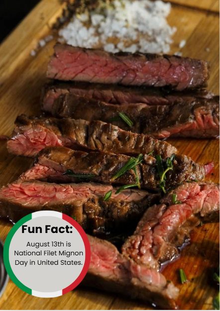

|  |
IngredientiFilet mignon steak Salt and black pepper High-heat oil Butter Garlic cloves, crushed Fresh herbs |
Ricetta-Take the steak out of the refrigerator 30-40 minutes before cooking to bring it to room temperature. Pat it dry with paper towels and season generously with salt and pepper on all sides. -Preheat your oven to \(400^{\circ }F\) (\(200^{\circ }C\)) and your skillet over medium-high heat. Add oil to the hot pan and sear the steak for about 1 minute per side to develop a crust. -Flip the steak, add a pat of butter, garlic, and herbs to the pan. Use a spoon to baste the steak with the melted butter for about 45 seconds. Sear the edges briefly by tilting the pan and rolling the steak. -Transfer the skillet to the preheated oven. Cook until it reaches your desired internal temperature (e.g., \(125^{\circ }F\) or \(52^{\circ }C\) for medium-rare). -Remove the skillet from the oven and transfer the steak to a cutting board or platter. Tent with foil and let it rest for 10 minutes to allow the juices to redistribute. -Slice the steak against the grain and serve. |